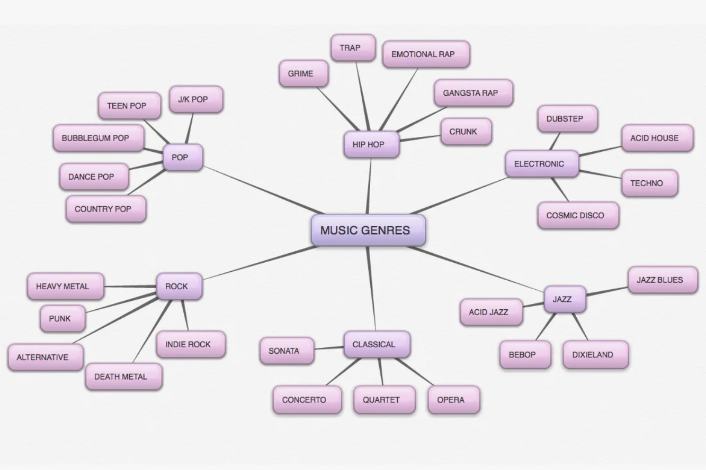
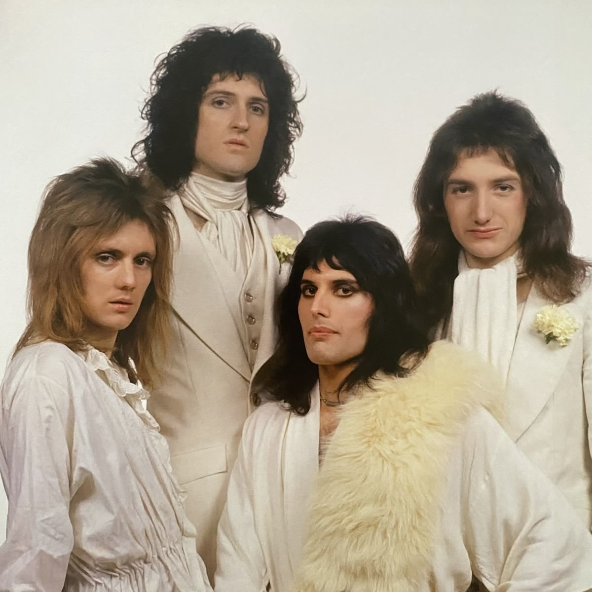
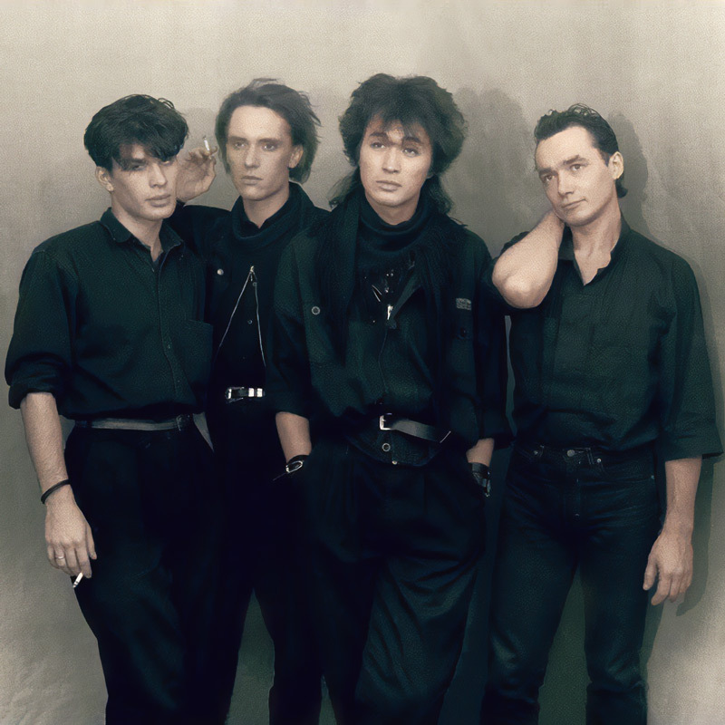

Музыкальный жанр — это категория, которая объединяет композиции по общим признакам: ритму, тематике, структуре, звучанию, используемым инструментам, манере вокала и другим характеристикам.

Поп-музыка — это жанр современной музыки, ориентированный на массовую аудиторию. Она сочетает в себе простые, запоминающиеся мелодии, ритмы и тексты, часто с акцентом на куплетно-припевную структуру.
Billie Eilish
Taylor Swift
Britney Spears
Рок — музыкальный жанр, для которого характерны выразительный ритм, звучание электрогитар, бас-гитары и ударных. Он отличается энергичной манерой исполнения и большим разнообразием стилей и направлений.

Queen

Кино
Arctic Monkeys
Рэп — это музыкальный жанр и способ исполнения, при котором ритмичная, часто рифмованная речь проговаривается или «читается» под музыкальное сопровождение (бит). В отличие от традиционного пения, здесь голос работает как ударный инструмент: он попадает в ритм, расставляет акценты и ведёт повествование.
Cardi B
Eminem
Pyrokinesisс
Все исполнители доступны для прослушивания на Яндекс.Музыке, Spotify и Apple Music: